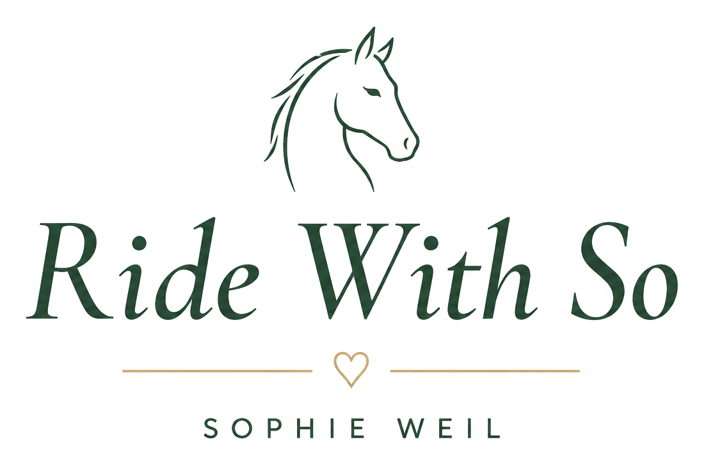

← Mon Carnet
Nouveau cheval
Appuyer pour ajouter une photo

Un seul dossier. Deux façons de progresser avec ton cheval.
Ton espace personnel pour observer, progresser et garder trace de ton chemin.
Retrouve ta progression et reprends là où tu t'es arrêté.
Kiro est en veille. Une nouvelle affaire vous attend.
Travailler ton cheval, étape par étape.
"L'œil, comme tout le reste, s'apprend."
"Décrire avant de conclure. Nommer avant de comprendre."
"Apprendre à voir le cheval tel qu'il est — avant de vouloir le changer — est peut-être la compétence la plus précieuse en éthologie."
| Comportement | Durée observée | Notes |
|---|---|---|
| Alimentation | ||
| Repos | ||
| Déplacement | ||
| Interactions sociales | ||
| Vigilance | ||
| Exploration | ||
| Agitation / stress | ||
| Autre |
Ces situations se produisent tous les jours. Les indices sont là. L'exercice : les décrire avant de les interpréter — regardez d'abord, concluez ensuite.